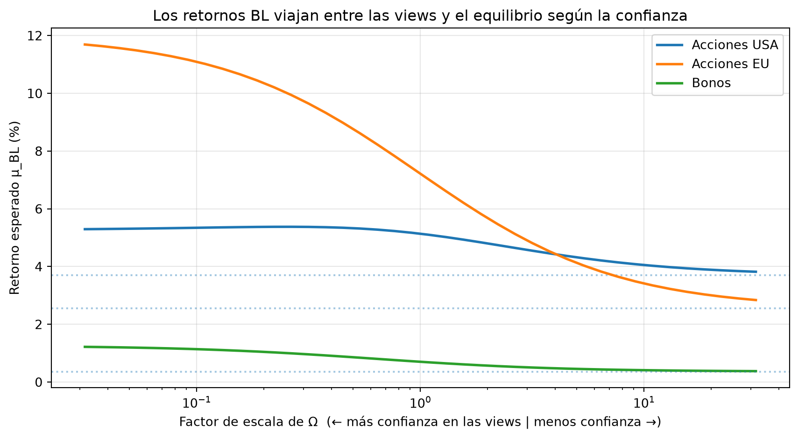

import numpy as np
np.set_printoptions(precision=4, suppress=True)10 Capítulo 10: El Modelo de Black-Litterman
Del equilibrio de mercado a las views del inversor (enfoque algebraico)
Resumen
Markowitz tiene un problema práctico: es hipersensible a los retornos esperados que le pasamos, y esos retornos son justamente lo más difícil de estimar. Black y Litterman lo resolvieron con una idea elegante: partir del retorno que el propio mercado está implícitamente asumiendo (el equilibrio) y ajustarlo solo donde el inversor tiene una opinión fundada. En este capítulo lo derivamos por el método clásico y algebraico, paso a paso.
11 Introducción: por qué Markowitz solo no alcanza
En el Capítulo 8 aprendimos a construir la frontera eficiente. Pero si intentás usar Markowitz “puro” con datos reales, te chocás con un problema incómodo: el modelo es extremadamente sensible a los retornos esperados \(\boldsymbol{\mu}\) que le das de entrada. Cambiás la estimación del retorno de un activo en medio punto y la cartera óptima se da vuelta por completo, concentrándose en dos o tres posiciones extremas (a veces con ventas en corto gigantes).
El problema de fondo es que \(\boldsymbol{\mu}\) es lo más difícil de estimar en finanzas: el promedio histórico es un estimador malísimo del retorno futuro. Entonces alimentamos el modelo más sensible con el input más ruidoso. El resultado son carteras que ningún gestor firmaría.
Black-Litterman (1992), nacido en Goldman Sachs, ataca el problema con un cambio de perspectiva:
En lugar de inventar los retornos esperados desde cero, arranquemos del retorno que el mercado ya está asumiendo hoy, y ajustémoslo solo donde tengamos una opinión concreta y en la medida de nuestra confianza en ella.
TipLa idea en una frase
Markowitz te pregunta “¿cuánto va a rendir cada activo?” y se cree tu respuesta al pie de la letra. Black-Litterman te pregunta “¿en qué diferís del mercado, y cuán seguro estás?” — una pregunta mucho más honesta y fácil de responder.
12 La intuición: combinar una creencia previa con nueva información
Antes de la matemática, la intuición, porque es el corazón del modelo.
Imaginate que querés estimar cuánto va a rendir una acción. Tenés dos fuentes de información:
- Una creencia previa: “el mercado, con todo su peso, está descontando un 8% para este activo”. Es una referencia sensata y difícil de discutir.
- Una opinión propia (nueva información): “yo estudié el sector y creo que va a rendir 12%”.
¿Con qué te quedás? Ni una ni otra a ciegas: hacés un promedio ponderado por tu confianza. Si tu análisis es muy sólido, tu estimación final se acerca al 12%; si tenés dudas, se queda cerca del 8% del mercado. Y si tu opinión coincide con el mercado, no cambia nada.
Ese mecanismo —partir de una creencia y moverla hacia la nueva evidencia en proporción a la confianza— es exactamente lo que formaliza Black-Litterman. En la literatura vas a ver que la versión completa se deriva como una actualización bayesiana (prior + verosimilitud → posterior), pero no hace falta la maquinaria bayesiana para entenderlo ni usarlo: se puede escribir como un conjunto de operaciones matriciales cerradas. Ese es el camino que vamos a tomar.
13 Paso 1: los retornos implícitos de equilibrio (optimización inversa)
La primera pieza es la creencia de partida: ¿cuáles son los retornos que el mercado está asumiendo? Acá viene el truco más lindo del modelo.
En Markowitz, dada una matriz de covarianzas \(\Sigma\) y unos retornos esperados \(\boldsymbol{\mu}\), buscamos los pesos óptimos \(\mathbf{w}\). Black-Litterman invierte esa lógica: si suponemos que la cartera de mercado (la capitalización de cada activo) ya es óptima —porque es el consenso agregado de todos los inversores—, entonces podemos despejar qué retornos \(\boldsymbol{\Pi}\) la harían óptima. Es optimización inversa.
El resultado es la fórmula del retorno implícito de equilibrio:
\[\boldsymbol{\Pi} = \delta \, \Sigma \, \mathbf{w}_{mkt}\]
donde:
- \(\mathbf{w}_{mkt}\) son los pesos de la cartera de mercado (por capitalización),
- \(\Sigma\) es la matriz de covarianzas de los retornos,
- \(\delta\) es el coeficiente de aversión al riesgo del mercado (típicamente entre 2 y 3).
# Universo de ejemplo: 3 activos (digamos, tres clases de activos)
activos = ["Acciones USA", "Acciones EU", "Bonos"]
# Pesos de mercado (por capitalización) — suman 1
w_mkt = np.array([0.55, 0.30, 0.15])
# Matriz de covarianzas anual de los retornos
Sigma = np.array([
[0.0225, 0.0075, 0.0010],
[0.0075, 0.0196, 0.0012],
[0.0010, 0.0012, 0.0036],
])
# Aversión al riesgo del mercado
delta = 2.5
# Retornos implícitos de equilibrio: Π = δ Σ w_mkt
Pi = delta * Sigma @ w_mkt
for a, pi in zip(activos, Pi):
print(f"{a:<14} retorno implícito: {pi:6.2%}")Acciones USA retorno implícito: 3.69%
Acciones EU retorno implícito: 2.55%
Bonos retorno implícito: 0.36%Fijate lo que acabamos de lograr: sin estimar un solo retorno esperado a mano, obtuvimos un vector \(\boldsymbol{\Pi}\) razonable, coherente con el riesgo de cada activo y con lo que el mercado efectivamente tiene comprado. Los activos más riesgosos y con más peso en el mercado tienen mayor retorno implícito. Este \(\boldsymbol{\Pi}\) es nuestra creencia de partida.
Nota¿De dónde sale δ?
El coeficiente de aversión al riesgo se puede estimar como \(\delta = (\mu_{mkt} - r_f) / \sigma_{mkt}^2\): el premio por riesgo del mercado dividido por su varianza. Con un premio del ~5% y una volatilidad del ~14% anual, da \(\delta \approx 2.5\), el valor que usamos.
14 Paso 2: expresar las views del inversor
Ahora incorporamos nuestras opiniones. Black-Litterman las representa con tres objetos:
- \(P\) (matriz de picks): qué activos involucra cada view. Cada fila es una view.
- \(Q\) (vector): el retorno que afirma cada view.
- \(\Omega\) (matriz): la incertidumbre de cada view (cuánto desconfiamos de ella). Diagonal, un valor por view.
Las views pueden ser de dos tipos:
- Absolutas: “Acciones EU van a rendir 12%”. La fila de \(P\) tiene un
1en ese activo y0en el resto. - Relativas: “Acciones USA van a superar a Bonos por 4%”. La fila tiene un
+1en USA y un-1en Bonos.
# View 1 (absoluta): "Acciones EU rendirán 12%"
# View 2 (relativa): "Acciones USA superarán a Bonos por 4%"
P = np.array([
[0.0, 1.0, 0.0], # EU
[1.0, 0.0, -1.0], # USA - Bonos
])
Q = np.array([0.12, 0.04]) # retornos afirmados por cada view
print("Matriz P (picks):\n", P)
print("\nVector Q (views):", Q)Matriz P (picks):
[[ 0. 1. 0.]
[ 1. 0. -1.]]
Vector Q (views): [0.12 0.04]Para la incertidumbre \(\Omega\), una convención estándar (Idzorek) es hacerla proporcional a la varianza de la propia view bajo el modelo: views sobre activos más volátiles arrastran más incertidumbre. Aparece también un parámetro escalar \(\tau\) (chico, ~0.025–0.05) que refleja la confianza global en el equilibrio.
tau = 0.05 # escala de la incertidumbre del equilibrio
# Ω diagonal, proporcional a la incertidumbre de cada view: diag(P (τΣ) Pᵀ)
Omega = np.diag(np.diag(P @ (tau * Sigma) @ P.T))
print("Matriz Ω (incertidumbre de las views):\n", Omega)Matriz Ω (incertidumbre de las views):
[[0.001 0. ]
[0. 0.0012]]
TipEl sentido de Ω
\(\Omega\) es la perilla de confianza. Si ponés valores chicos, le estás diciendo al modelo “estoy muy seguro de estas views” y el resultado se pegará a \(Q\). Si los ponés grandes, el modelo casi las ignora y se queda con el equilibrio \(\Pi\). Es la traducción matemática del “cuán seguro estás” de la introducción.
15 Paso 3: la fórmula maestra de Black-Litterman
Con el equilibrio \(\boldsymbol{\Pi}\) y las views \((P, Q, \Omega)\), combinamos ambas fuentes en un único vector de retornos esperados ajustados, \(\boldsymbol{\mu}_{BL}\). Esta es la célebre fórmula maestra:
\[\boldsymbol{\mu}_{BL} = \left[ (\tau\Sigma)^{-1} + P^T \Omega^{-1} P \right]^{-1} \left[ (\tau\Sigma)^{-1} \boldsymbol{\Pi} + P^T \Omega^{-1} Q \right]\]
Parece intimidante, pero es exactamente el promedio ponderado por confianza de la intuición, escrito en matrices. Cada término \((\cdot)^{-1}\) es una “precisión” (lo inverso de la incertidumbre): el equilibrio pesa según su precisión \((\tau\Sigma)^{-1}\) y las views según la suya \(P^T\Omega^{-1}P\). Donde no hay view, prevalece el equilibrio; donde hay una view muy confiable, ella domina.
Para verlo, conviene mirar el caso de un solo activo con una sola view: la fórmula se reduce a
\[\mu_{BL} = \frac{\pi/\sigma_\pi^2 + q/\sigma_q^2}{1/\sigma_\pi^2 + 1/\sigma_q^2}\]
que es literalmente un promedio de \(\pi\) (equilibrio) y \(q\) (view) ponderado por las precisiones. La versión matricial hace lo mismo con todos los activos y views a la vez, respetando las correlaciones.
inv_tau_Sigma = np.linalg.inv(tau * Sigma)
inv_Omega = np.linalg.inv(Omega)
# Fórmula maestra
A = inv_tau_Sigma + P.T @ inv_Omega @ P
b = inv_tau_Sigma @ Pi + P.T @ inv_Omega @ Q
mu_BL = np.linalg.solve(A, b) # resolvemos A μ = b (más estable que invertir A)
print(f"{'Activo':<14}{'Equilibrio Π':>14}{'Black-Litterman':>18}")
for a, pi, m in zip(activos, Pi, mu_BL):
print(f"{a:<14}{pi:>13.2%}{m:>17.2%}")Activo Equilibrio Π Black-Litterman
Acciones USA 3.69% 5.14%
Acciones EU 2.55% 7.22%
Bonos 0.36% 0.70%Leé la tabla con calma: los retornos ajustados se movieron desde el equilibrio hacia nuestras views. Acciones EU subió hacia el 12% que afirmamos; USA subió (y Bonos bajó) por la view relativa. Pero ningún valor saltó descontroladamente: el modelo mezcló, no reemplazó. Eso es precisamente lo que le faltaba a Markowitz.
Fijate también que se movió el retorno de activos sobre los que no opinamos directamente: como Bonos está correlacionado con los demás, la fórmula propaga la información a través de \(\Sigma\). Es una consecuencia elegante de trabajar con todas las covarianzas juntas.
16 Paso 4: del retorno ajustado a la cartera óptima
El vector \(\boldsymbol{\mu}_{BL}\) es un input de retornos esperados mucho más robusto que un promedio histórico. Ahora sí lo metemos en la optimización de Markowitz para obtener los pesos. Sin restricciones adicionales, los pesos óptimos tienen forma cerrada:
\[\mathbf{w}_{BL} = \frac{1}{\delta} \, \Sigma^{-1} \, \boldsymbol{\mu}_{BL}\]
# Pesos óptimos con los retornos de Black-Litterman
w_BL = (1 / delta) * np.linalg.solve(Sigma, mu_BL)
print(f"{'Activo':<14}{'Cartera mercado':>16}{'BL con views':>15}")
for a, wm, wb in zip(activos, w_mkt, w_BL):
print(f"{a:<14}{wm:>15.1%}{wb:>14.1%}")
print(f"\nSuma de pesos BL: {w_BL.sum():.1%}")Activo Cartera mercado BL con views
Acciones USA 55.0% 47.8%
Acciones EU 30.0% 127.6%
Bonos 15.0% 22.2%
Suma de pesos BL: 197.6%Cuando no hay views, \(\mathbf{w}_{BL}\) reproduce la cartera de mercado (por construcción: es el punto de partida). Al agregar opiniones, el modelo se desvía del mercado solo en la dirección de esas views: sobrepondera lo que creemos que va a rendir más y reduce lo que va a rendir menos, de forma proporcional y sensata. Compará esto con Markowitz puro, donde una view chica podía generar una posición apalancada extrema.
AdvertenciaDetalle práctico
Los pesos de arriba pueden no sumar exactamente 1 y pueden incluir cortos. En la práctica se re-normalizan y se agregan restricciones (no negatividad, límites por activo) resolviendo la optimización con scipy.optimize.minimize, como en el Capítulo 8, pero usando \(\boldsymbol{\mu}_{BL}\) como retornos esperados.
17 Visualizando el efecto de la confianza
Para cerrar la intuición, veamos cómo la confianza en las views gobierna el resultado. Escalamos \(\Omega\) con un factor: valores chicos = mucha confianza, grandes = poca.
import matplotlib.pyplot as plt
factores = np.logspace(-1.5, 1.5, 40) # de mucha a poca confianza
trayectorias = []
for f in factores:
Omega_f = Omega * f
A_f = inv_tau_Sigma + P.T @ np.linalg.inv(Omega_f) @ P
b_f = inv_tau_Sigma @ Pi + P.T @ np.linalg.inv(Omega_f) @ Q
trayectorias.append(np.linalg.solve(A_f, b_f))
trayectorias = np.array(trayectorias)
fig, ax = plt.subplots(figsize=(9, 5))
for i, a in enumerate(activos):
ax.plot(factores, trayectorias[:, i] * 100, linewidth=2, label=a)
ax.axhline(Pi[i] * 100, linestyle=":", alpha=0.4)
ax.set_xscale("log")
ax.set_xlabel("Factor de escala de Ω (← más confianza en las views | menos confianza →)")
ax.set_ylabel("Retorno esperado μ_BL (%)")
ax.set_title("Los retornos BL viajan entre las views y el equilibrio según la confianza")
ax.legend()
ax.grid(True, alpha=0.3)
plt.tight_layout()
plt.show()
A la izquierda (mucha confianza) los retornos se acercan a lo que afirman las views; a la derecha (poca confianza) vuelven a las líneas punteadas del equilibrio. El modelo nunca te deja “irte” más allá de tus propias views ni ignorar del todo al mercado: interpola entre ambos de manera controlada.
18 Recapitulando el flujo
El modelo completo es una tubería de cuatro pasos:
- Equilibrio → \(\boldsymbol{\Pi} = \delta \Sigma \mathbf{w}_{mkt}\) (la creencia de partida, gratis, desde el mercado).
- Views → armar \(P\), \(Q\), \(\Omega\) (nuestras opiniones y su confianza).
- Fórmula maestra → \(\boldsymbol{\mu}_{BL}\) (la mezcla ponderada por precisión).
- Optimización → \(\mathbf{w}_{BL}\) (la cartera final).
La gran ventaja: cada paso tiene una interpretación económica clara, y en ningún momento tuvimos que inventar retornos esperados de la nada. Por eso Black-Litterman es, todavía hoy, uno de los modelos de asignación de activos más usados en la industria.
19 Errores comunes
AdvertenciaTrampas frecuentes
- Confundir \(\tau\) con \(\Omega\): \(\tau\) escala la incertidumbre global del equilibrio; \(\Omega\) es la incertidumbre de cada view. Son perillas distintas.
- Views inconsistentes con \(\Sigma\): si afirmás que dos activos altamente correlacionados se moverán en direcciones opuestas, el modelo hará contorsiones raras. Las views deberían ser coherentes con la estructura de covarianzas.
- Olvidar re-normalizar los pesos o permitir cortos sin querer: siempre revisá que \(\mathbf{w}_{BL}\) sume 1 y respete tus restricciones.
- Invertir matrices con
invpara resolver sistemas: usánp.linalg.solve, que es más estable numéricamente que calcular la inversa y multiplicar.
20 Ejercicios Propuestos
ImportanteEjercicios
- Sin views: corré el modelo sin ninguna view (saltando la fórmula maestra, \(\boldsymbol{\mu}_{BL} = \boldsymbol{\Pi}\)) y verificá que \(\mathbf{w}_{BL}\) reproduce la cartera de mercado \(\mathbf{w}_{mkt}\).
- Subiendo la confianza: reducí a la mitad los valores de \(\Omega\) y observá cómo \(\boldsymbol{\mu}_{BL}\) se acerca a \(Q\).
- View relativa pura: eliminá la view absoluta y dejá solo “USA supera a Bonos por 4%”. ¿Cómo cambian los pesos frente al mercado? ¿Qué pasa con EU, sobre el que ya no opinás?
- Con restricciones: usando
scipy.optimize.minimize, resolvé la cartera óptima con \(\boldsymbol{\mu}_{BL}\) imponiendo pesos no negativos que sumen 1, y compará con la solución cerrada. - Cuarto activo: extendé el universo a cuatro activos, definí una view sobre el nuevo y recalculá todo el pipeline.
21 Referencias
- Black, F., & Litterman, R. (1992). Global Portfolio Optimization. Financial Analysts Journal, 48(5), 28–43.
- Idzorek, T. (2007). A Step-by-Step Guide to the Black-Litterman Model. En Forecasting Expected Returns in the Financial Markets. Academic Press.
- Meucci, A. (2010). The Black-Litterman Approach: Original Model and Extensions. SSRN.